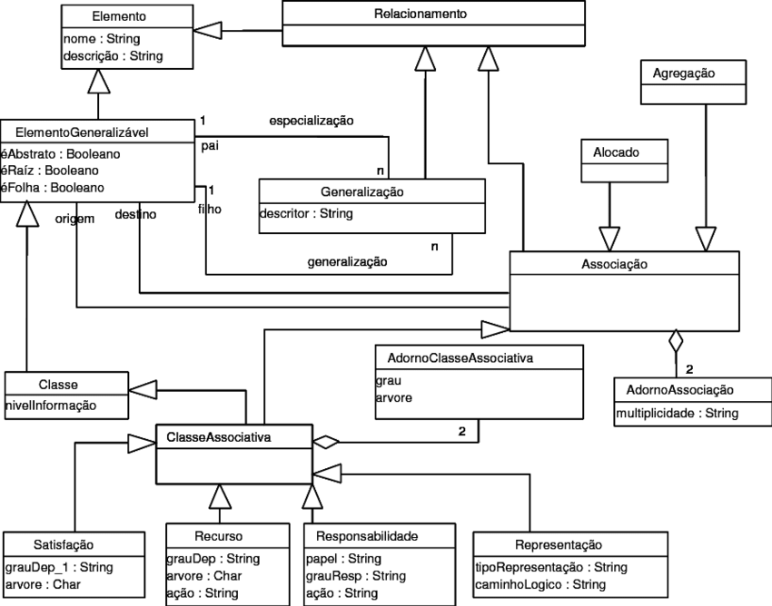

Matriz Backward-From
1. Introdução
A rastreabilidade de requisitos acontece quando os requisitos são claramente ligados às suas fontes e aos artefatos criados durante o ciclo de vida de desenvolvimento do sistema. Assim, podendo tomar ambas direções forward (para frente) e backward (para trás).
Será apresentado nessa página a matriz de rastreabilidade backward-from que liga os requisitos às suas fontes.
A tabela que representa a rastreabilidade contém cinco colunas, ID que lista os códigos dos requisitos, sendo F para Requisitos Funcionais, e NF para Requisitos Não-Funcionais, a coluna de requisito, onde estão os requisitos do produto, a coluna de origem, que contém as técnicas que deram origem aquele requisito, nesta são atribuídos códigos que correspondem a cada categoria, estas representações são descritas na Figura 01, a coluna de categoria, que explicita as categorias pertencentes daquele requisito e estão descritas na Tabela 01, e por fim a coluna de elo onde é apresentado os relacionamentos da rastreabilidade .

2. Metodologia
Para classificação das informações, utilizamos o metamodelo proposto por Toranzo para auxiliar no rastreamento de requisitos.

2.1. Categoria
| Categoria | Descrição |
|---|---|
| Ambiental | informações oriundas do contexto no qual a organização está inserida |
| Desenvolvimento | informações associadas aos diversos artefatos gerados ao longo do processo de desenvolvimento (artefatos de requisitos, diagramas, códigos, casos de teste e outros) |
| Gerencial | informações que auxiliam a gerência do projeto |
| Organizacional | informações pertencentes à organização (missão, objetivos e estratégias) |
2.1. Elo
| Elo | Descrição |
|---|---|
| Satisfação | indica que a classe de origem tem dependência de satisfação com a classe de destino |
| Recurso | recurso é um elemento que representa uma informação tais como motivações por trás de mudanças em requisitos |
| Responsabilidade | representa a participação, os responsáveis e os conjuntos de ações das pessoas sobre os artefatos de software gerados |
| Representação | captura a representação dos requisitos em linguagens sejam elas de programação ou modelagem de dados |
| Alocação | similar ao elo de satisfação, esse elo representa a dependência de uma classe de origem com uma classe de destino que representa um subsistema |
| Agregação | visualiza se um elemento é composto por outros elementos |
3. Requisitos Funcionais
| ID | Requisito | Técnica | Categoria | Elo |
|---|---|---|---|---|
| RF01 | O usuário deve ser capaz de fazer o login através do gov.br | BF, IF, OF | Desenvolvimento, Organizacional | Representação |
| RF02 | O usuário deve ser capaz de visualizar o cronograma da prova | BF, IF, OF, SF, QF | Desenvolvimento, Gerencial | Representação |
| RF03 | O usuário deve ser capaz de acompanhar sua inscrição | BF, IF, OF, QF | Desenvolvimento, Gerencial, Organizacional | Representação |
| RF04 | O usuário deve ser capaz de acompanhar pedido de isenção de taxa de inscrição | BF, IF, QF | Desenvolvimento, Gerencial, Organizacional | Representação |
| RF05 | O usuário deve ser capaz de ter acesso aos avisos e às notícias | BF, IF, OF | Gerencial, Organizacional | Agregação (RF02, RF04, RF06, RF14) |
| RF06 | O usuário deve ser capaz de verificar as perguntas frequentes e as orientações | BF | Ambiental, Gerencial, Organizacional | Representação |
| RF07 | O usuário deve ser capaz de visualizar/baixar/imprimir sua nota de provas do Enem | BF, EF, IF, OF, SF, QF | Desenvolvimento, Organizacional | Representação |
| RF08 | O usuário deve ser capaz de visualizar/baixar/imprimir sua vista pedagógica das provas do Enem | BF, IF | Desenvolvimento, Organizacional | Representação |
| RF09 | O usuário deve ser capaz de visualizar/baixar/imprimir sua redação das provas do Enem | BF, IF, QF | Desenvolvimento, Organizacional | Representação |
| RF10 | O usuário deve ser capaz de visualizar/baixar/imprimir seu gabarito das provas do Enem | BF, QF | Desenvolvimento, Organizacional | Representação |
| RF11 | O usuário deve ser capaz de visualizar/baixar/imprimir as provas do Enem | BF, SF, QF | Desenvolvimento, Organizacional | Representação |
| RF12 | O usuário deve ser capaz de visualizar/baixar/imprimir simulados do Enem | SF | Desenvolvimento, Organizacional | Representação |
| RF13 | O usuário deve ser capaz de visualizar métricas de desempenho dos participantes | SF | Desenvolvimento, Gerencial, Organizacional | Agregação (RF07, RF08, RF11) |
| RF14 | O usuário deve ser capaz de consultar escopo de conteúdo do exame | SF | Gerencial, Organizacional | Agregação (RF12) |
4. Requisitos Não - Funcionais
| ID | Requisito | Técnica | Categoria | Elo |
|---|---|---|---|---|
| RNF01 | O aplicativo deve ter compatibilidade com qualquer sistema operacional | BF, IF | Gerencial | Representação |
| RNF02 | O aplicativo deve recusar o acesso de pessoas não autorizadas | BF, IF | Gerencial | Representação |
| RNF03 | O aplicativo deve proteger os dados dos usuários | BF, IF, QF | Ambiental | Representação |
| RNF04 | O aplicativo deve ser acessível para Pessoas com Deficiência (PcD) | BF, IF, QF | Desenvolvimento, Gerencial | Representação |
| RNF05 | O aplicativo deve consegui suportar uma grande quantidade de acessos simultâneos | BF, EF, IF, OF, QF | Desenvolvimento, Gerencial | Representação |
| RNF06 | O aplicativo deve ter baixo tempo de espera mesmo durante períodos de grande fluxo | BF, IF | Desenvolvimento, Gerencial | Representação |
| RNF07 | O aplicativo deve deve ter ter uma interface amigável na qual com no máximo 3 cliques o usuário consiga realizar a ação desejada | BF, QF, SF | Desenvolvimento, Organizacional | Representação |
| RNF08 | O aplicativo deve deve se adaptar bem a dispositivos mobile | BF | Desenvolvimento, Organizacional | Representação |
| RNF10 | O aplicativo deve possuir funcionalidades em modo offline | SF | Desenvolvimento | Representação |
5. Bibliografia
Davis, A. M., Software Requirements: Objects, Functions and States. Englewood Cliffs, New Jersey: Prentice Hall. 1993. [1]
Antonio Carlos Souza; Caio Dias; Márcio Macedo AADSP Gerencia de Requisitos São Paulo/SP - Ed. Ixtlan, Agosto/2018 [2]
M. Toranzo and J. Castro, Uma proposta para melhorar o rastreamento de requisitos pp. 194–209, 2002. [3]
6. Histórico de versão
| Versão | Data | Modificação | Autor |
|---|---|---|---|
| 1.0 | 01/04/2022 | Criação do página | Pedro Henrique |
| 1.1 | 01/04/2022 | Elaboração do documento | Pedro Henrique |
| 1.2 | 03/04/2022 | Metodologia | Carlos Rafael |